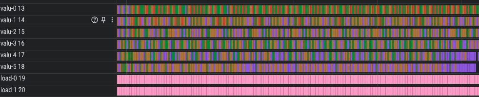
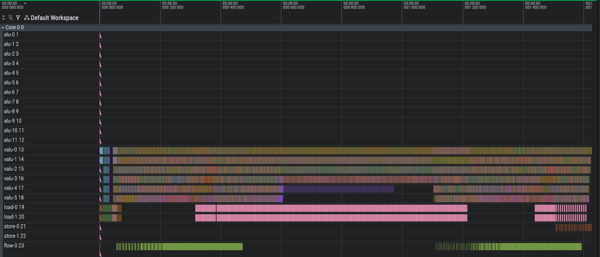
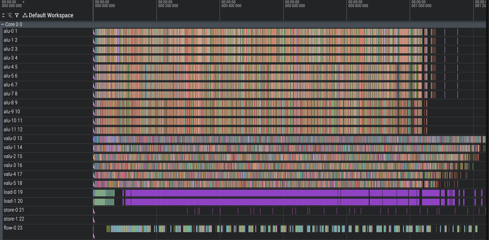

I tried Anthropic's Performance Takehome
February 9, 2026
I attempted Anthropic’s performance take-home exam released recently. I achieved a final score of 1218 cycles, beating both the recruiting threshold (1487) and Opus 4.5’s best score (1363). My solution is relatively simple and interpretable, combining a couple of basic theoretical and practical optimizations. Scroll to the bottom for a simulation of the solution in the form of my intermediate representation.
Contents
- Problem statement
- Compute and Memory Bounds
- Symbolic Intermediate Representation
- Compiling
- First Shot (2107 cycles)
- “Mux” Level 0 (1860 cycles)
- Mux Level 1 (1722 cycles)
- Mux Level 2 (1655 cycles)
- Mux Level 3 (1620 cycles, but out of registers)
- Mux Level 3, Rotated Input (1548 cycles)
- Optimize Preamble (1498 cycles)
- Use the rest of the ALU (1240 cycles)
- Optimize Tail (1218 cycles)
- Final thoughts
Problem statement
The Processor
You’re given a single instruction multiple data (SIMD) processor simulator. This processor can perform math operations on vectors of length 8.
The processor can perform up to 12 scalar ALU operations, 6 vectorized ALU operations, 2 loads, 2 stores, and a flow control operation all in one clock cycle, but no two instructions in the same cycle can read what the other writes.
There’s a RAM “scratch memory” of 1536 ordered registers, which is what the ALU and vector instructions can operate on. Vector instructions have to target 8 contiguous scalar registers. All the actual problem data starts on main memory, and must be loaded into scratch memory before it can be used.
The Algorithm
The algorithm you’re asked to compute is as follows: you’re given a binary tree of height 10 (so the layers have 1, 2, 4, …, 2^10 nodes each, for 11 distinct layers and 2047 nodes total). Each node has a random integer value. You’re also given an array of input values, which has length batch_size=256. For each input value, you start at the top of the tree and xor your value with the top node’s value, then hash this new value with a given hash function. If your result is even, you take the left branch of the tree, otherwise you go right. You repeat this operation 16 times total, each time going down a level of the tree, and eventually looping around to the top node of the tree when you get to the last layer (which will always happen after round 11). This traversal is completely independent for each of the 256 input values.
For the tree, we can compute child values using the tree indexing trick where the top node is at index 1 and every node x’s child is at index 2x and 2x+1 for left and right. Given this, there are three distinct phases to each of the 16 hops, given a current value v and index i (initialized to 1):
- Get the corresponding tree node i’s value v’ and xor it: v = v xor v’
- Hash v: v = hash(v)
- Compute the next index: i = 2i + (v%2), and if i>2047, i = 1
Notably, we’ll know at compile time when the loopback happens since we can compile our kernel for a specific testcase (where only the inner tree data is random but all the size parameters are fixed and known), so we don’t actually have to check this if statement in code (we can just directly set all the indices back to 1).
Compute and Memory Bounds
Ops
The baseline code requires 147734 total instructions to compute the algorithm on the given test case. The baseline code only uses singular ALU ops and no SIMD/vectorization at all in any clock cycle. We’re only tested on this one specific test case, namely 256 inputs, height 10 tree, and 16 rounds, so we can overfit for convenience in this analysis.
The processor is capable of roughly 8x6+12 = 60 regular arithmetic operations per clock cycle, assuming that we always fuse vectorized multiplies and adds into a multiply_add.
The initial xor with the value in the tree takes 1 op. The hash function mentioned earlier has 6 stages, each requiring 3 operations, and we have to do an additional xor at the beginning. However, it turns out the multiply_add can be used to crush three of those stages down to one operation each (these stages can be written as the sum of x, x shifted left by some amount, and a hardcoded number, which boils down to x times 2^n+1 plus c for some n and c), so we only need 12 ops for our hash. Computing the next node to hop to is a bit trickier and implementation-dependent, but we’ll assume for now it requires an & with 1 for the modulo check, a doubling of the old index pointer, and an addition of that 0 or 1 from the modulo check, so three more ALU ops. This is a total of 16 operations per batch item per round.
Then for a batch size of 256 and 16 rounds, we’ll need 256x16x16=65536 operations, or roughly 1092 clock cycles for compute. Note that we’re allowed to load and store at the same time as our compute cycles, so this is a lower bound on performance possible assuming we compute exactly as described. Opus 4.5’s launch performance was 1487 cycles, and its best performance was 1363 cycles.
Aside: Main Memory Indexing
The tree values in main memory start at address 7, meaning the first node is at main_mem[7]. We can only address main memory by putting the address we want in a scratch register and giving that scratch register as an argument. This means if we store indices with our regular 1-indexing, we’ll have to add 6 every time we want to fetch the tree values, and subtract 6 every time we want to compute the next index. We really want to avoid these extra ALU operations if possible.
It turns out we can keep our indices in the 7-indexed scheme thanks to the vmultiply_add operation. Normally, we’d compute left_node = parent_node x 2, but if we instead store parent_node+6, we can compute left_node+6 = (parent_node+6) x 2 - 6. This means we can directly load from our index registers while still cheaply doubling node indices.
Memory
I initially wrote up a version of this problem where we try to load in as much of the tree as possible to scratch, then use those values throughout the problem. For the same reason earlier mentioned about main memory addressing, this is impossible - there are no instructions capable of double indirection into scratch memory. If we have a scratch address in a scratch register, we can’t actually dereference that scratch address and fetch or do math with the result. This means, for every round and value, we need to either:
- Fetch the required tree value straight from main memory, as the load instruction does allow (and in fact requires) double indirection.
- Do something clever using instructions like vectorized select to reduce the memory pressure, particularly on less complicated levels of the tree. For example, on level 0, all of the scratch values xor with the same tree value, so we can just load it to a register and reuse it for all the scratch values without any loading logic.
If we go with idea 1 for every level of our tree, we’ll need 16 rounds of loads for each of the 256 values in our batch, and at 2 loads per cycle that’s at least 2048 cycles. Thanks to the specific test case design and the VSELECT instruction, there’s a lot we can do to match the memory and compute cost.
Muxing
(For this section, we’ll go back to assuming our indices are 1-indexed)
We want to replace memory operations with compute operations to balance out the workloads. On layer 0, as mentioned, we’ll just load the first tree value once and use it for every element.
On layers 1, 2, and 3, we need to load in only 2, 4, and 8 values respectively (unlike layer 10 where there’s as many as 1024 possible values we could be asked to load in, with likely little to no reuse among our 256 elements). To take advantage of these small layers, we can implement a MUX (multiplexing) tree, which attempts to efficiently convert the vector of indices [a,b,c,d,e,f,g,h] to a vector of [arr[a],arr[b],arr[c],arr[d],arr[e],arr[f],arr[g],arr[h]] by taking advantage of assumptions on the range of the values of the indices.
For this, we’ll need the VSELECT instruction. VSELECT takes three vector registers we can call s, a, and b. VSELECT functions like an if-else statement on the condition of s. If index i of s is nonzero, the output register gets a[i] in slot i, otherwise it gets b[i].
In the 2-value case, the mux tree is pretty easy. All our indices are either 2 or 3, so we & our index vector with 1 to get a vector of 0 or 1 based on if we need to xor that value with tree[2] (even) or tree[3] (odd). Now we set our output vector to the VSELECT of the vector of tree[2] and the vector of tree[3\,] selecting on our &1 vector so that the even values (where there’s a 0) will get index 2 and the odd values will get index 3. Note that we broadcast our two tree values into full vector registers so that they are in the form required by the VSELECT instruction.
In the 4-value case, we start building up the MUX tree. The idea is that we can VSELECT the bottom bit for each case of the top bit, then VSELECT those two cases together. We’re working with indices 4, 5, 6, and 7, with bottom bits 0b00, 0b01, 0b10, 0b11. First we VSELECT together tree[4] and tree[5] based on the bottom bits (so selecting via &1) - this puts the correct value in place for 0b00 and 0b01, but garbage value in place for 0b10, 0b11. Next, we VSELECT together tree[6] and tree[7] on the bottom bits into a separate register, which gives us the right values for 0b10 and 0b11 and garbage for the others. Finally, we &2 the indices to get the top bit, which tells VSELECT which register that index should pull its value from (while the other register will have a garbage value). This combines our two intermediate vectors into one final correct vector.
We can build this tree up arbitrarily tall, but it will obviously cost more registers and compute if we do it later and later in the tree since we’ll have more and more values to mux together. Since there are 32 batches of 8 in our input, we’ll need 0, 32, 96, 224, and 480 VSELECTs for each round at level 0, 1, 2, 3, and 4 in the tree (and each of these levels appears twice). We only have on the order of 1000 total VSELECTS we can use since we only get one per cycle.
If we load all but levels 0-3 of the tree, we will load 8 levels of the tree and require 2048 loads, taking 1024 cycles. This will require 704 VSELECTs and a handful more vector ops, so resource consumption across the instruction types is now much more balanced.
Symbolic Intermediate Representation
We could try to orchestrate and fit the instructions to the CPU ourselves, but most likely this will create gaps that are difficult to manually handle. Instead, we’re going to write our code in an intermediate representation (a version of the program that operates on symbolic registers rather than real data or real scratch addresses), and then write a compiler pass that compresses and pipelines it automatically. This will also make it easier to take advantage of ALU operations later.
The intermediate representation scheme we’ll write is relatively simple, but hits some quirks around loading and storing. It has two rough assumptions:
- All registers are treated as 8-aligned vector registers
- Every instruction writes to a fresh register. The compiler will handle checking when a register can be “clobbered” ie written over due to nothing needing to read from it anymore.
One exception is that loading the tree from indices requires 8 loads all to the same vector, because it only loads one scalar at a time, so the compiler will have to do some extra offset computations when lowering this instruction from IR to a real instruction.
With this and a bunch of small implementation details, we can write our entire computation in an IR form that doesn’t care what the input values are, as long as we’re careful to write each instruction correctly. A sample of these is shown below:
@dataclass(frozen=True)
class const_register:
name: str
is_scalar: bool
@dataclass(frozen=True)
class index_register:
batch_index: int
round: int
is_doubled: bool
@dataclass(frozen=True)
class value_register:
batch_index: int
round: int
stage: int
@dataclass(frozen=True)
class tree_address_register:
batch_index: int
round: int
@dataclass(frozen=True)
class tree_register:
batch_index: int
round: int
slots_filled: intEach IR instruction is a real operation, but written to operate on instantiations of these imaginary registers instead of a real scratch address. For example, when computing the first hash stage of a value, inside a double for loop that tells us which batch index and round we’re on:
# Hash stage 1
instrs.append((
"valu",
"vmultiply_add",
value_register(batch_index=,round=,stage=2),
value_register(batch_index=,round=,stage=1),
const_register(name="HASH_1_MUL", is_scalar=False),
const_register(name="HASH_1_ADD", is_scalar=False),
))The fresh register property mentioned earlier gives this IR code the really nice property that once we’ve emitted all our instructions, we can verify that they perform the correct computation by simulating the instructions on an infinite register machine that always allocates a fresh register on each write.
Compiling
We’d now like our compiler to figure out how to pack our instructions into the given slots for us. With our IR, the first pass of this is pretty easy. We need to know which instructions depend on which so that each instruction that reads from scratch always has its desired inputs available. Any two instructions that have all their inputs available can be immediately scheduled.
We can generate a dependency graph from our instructions, where we say A depends on B (B->A) if B writes a register that A reads. Once we’ve constructed this dependency graph, we can greedily grab sets of orphaned nodes from the graph (nodes with no parents, meaning all the registers are ready to use) and append them to the current cycle until we’re out of instructions or out of slots in the cycle. We can keep track of scratch registers at the same time, where any register that no longer has future readers will be evicted from the used scratch.
First Shot (2107 cycles)
We’ll skip the mux tree for now and check that our compiler works from end to end.
As we expect, we’re underutilizing the vector ALU because of loads - almost exactly to the degree we expect, 2048 load cycles + extra overhead like loading constants and final stores.

“Mux” Level 0 (1860 cycles)
We’ll now directly address level 0’s one node as a constant. Now all six VALU lanes are fully utilized for the first ~200 cycles and again later on (once we’ve looped back around to level 0) for another 200 cycles.
Those 200 cycles, zoomed in:
The entire trace, with the second set of 200 cycles highlighted:

Mux Level 1 (1722 cycles)
Because of our indexing optimization, we have to be a little careful how we mux, but thankfully just by shuffling the two outputs in each VSELECT we can assign the mux outputs however we want (as long as the input index range is contiguous, so that their bottom bits uniquely define them).

Mux Level 2 (1655 cycles)
The speedups are starting to stall, likely because our compiler isn’t smart enough to rush through one of the batches so it can get to the load-heavy batches and start running the load bottleneck. We have load bubbles of roughly 300 cycles.

Mux Level 3 (1620 cycles, but out of registers)
In addition to adding mux level 3, I went back and optimized the logic for mux 1 and 2 (mainly reusing the value&1 computed in the previous iteration). Not only are we losing our speedups, we also can’t actually run the code without at least 1900 registers.
This is mainly because of bigger and bigger bubbles in loading; our compiler isn’t smart enough to rush to the bounded loading steps. We’re running out of registers because our compiler schedules all the heavy mux level 3 operations at once among all the batches, and they consume a lot of extra registers before they can be freed.
Mux Level 3, Rotated Input (1548 cycles)
We can sidestep this problem really simply - we just need to write our input in a way that doesn’t clog up the registers when everyone gets to muxing level 3. We do this by emitting instructions for all rounds of batch 1, then all rounds of batch 2, etc. instead of all round 1s, all round 2s, etc. By doing this, not only do we no longer run out of registers, but we also smear the computation much more evenly through the middle - the big bubble in the fifth and sixth lane is completely gone.
This is not a scientific result, but a fairly lucky coincidence that manages to spread out the mux level 3 enough to keep our registers open. It saves us a lot of time redesigning the compiler.
The coloring changed because I updated the labeling to use the names of the IR registers instead of the true underlying register indices.

Optimize Preamble (1498 cycles)
Right now we load_const all our constants, which clogs up the preamble quite a bit with a stuffed load unit. A good chunk of our constants can be computed directly from other constants, like HASH_6_RIGHTSHIFT with the value 16 that can be computed as 4x4.
We can also start using the ALU earlier. Our code doesn’t do hotpath analysis, so it takes a bit of loading before the ALU can start crunching. Just by moving the loading of tree node 0 a little earlier, we can start the ALU much sooner and overlap it with the last few loads needed for later stages.
Before:

After:

Use the rest of the ALU (1240 cycles)
We have 12 ALU operations unused. The first 8 are easy to use - any vector ALU op that isn’t a broadcast operation or vmultiply_add operation can be split into 8 of the same scalar operation with the register indices updated.
For the last 4 slots, we have to be a little smarter. We can schedule half of a vector instruction by turning the first 4 slots into ALU ops, but leave it on the graph and mark it as half done instead of fully done. We’ll prioritize scheduling the other half of these vector instructions on the next cycle’s ALU so that the vector is half-done for only one cycle.
This predictably gives us a huge performance jump, as we go from 6 to 7.5 vector ALU ops per cycle. Naively, this should give us at most a 25% performance increase, which would ideally put us at ~1200 cycles, but obviously there’s some non-ALU overhead. This also puts us ahead of Claude’s best performance.
Optimize Tail (1218 cycles)
While the aforementioned input rotation is great for fixing the register problem, it creates a long tail of inputs that poorly utilize the compute at the end, as there aren’t enough batch elements to parallelize (manifesting as a staircase pattern). We can slightly improve on this by adding the last four batches in the original order, round-by-round, so that there will be more parallel work at any given moment near the end.
We again get lucky with no register outage, likely thanks to (1) the previous batches creating a long tail for our instructions to fill in which smears the extra VSELECT registers, and (2) the new batches we scheduled not being large enough to exert too much register pressure. We pick the last four batches because they achieve the best performance.

Final thoughts
There’s quite a lot more compiler optimization work here that could be done, but given I’m approaching my own theoretical lower bound, I think these returns will be quickly diminishing. These efforts would mainly go towards trying to solve for the best packing, through things like hot path analysis to avoid the remaining tail at the end and smarter register allocation. We do some manual shuffling of instructions in the preamble that we’d really prefer the compiler figure out for us, and we would rather our compiler be agnostic to the rotation and exact instruction stream order of the IR.
There’s about 80 cycles of load bubbles left, which if further optimized would get us within a few percent of the ALU lower bound mentioned earlier. Under the current compute graph this may not be possible with limited remaining ALU room, but there’s plenty of other inefficiencies in the loading operations (namely in loading addresses for main memory) I didn’t work on because it would’ve required significant updates to the IR scheme.
I achieved a final score of 1218 cycles, which I’m pretty happy with. I ran it on the commented-out test case on different args to show we didn’t overfit to the main test case and actually get even better relative speedups on smaller test cases:
forest_height=2, rounds=4, batch_size=128
CYCLES: 156
Speedup over baseline: 947.0128205128206
forest_height=3, rounds=5, batch_size=128
CYCLES: 233
Speedup over baseline: 634.0515021459228
forest_height=4, rounds=6, batch_size=128
CYCLES: 251
Speedup over baseline: 588.5816733067729
forest_height=2, rounds=4, batch_size=256
CYCLES: 284
Speedup over baseline: 520.1901408450705
forest_height=3, rounds=5, batch_size=256
CYCLES: 419
Speedup over baseline: 352.5871121718377
forest_height=4, rounds=6, batch_size=256
CYCLES: 462
Speedup over baseline: 319.7705627705628
forest_height=10, rounds=16, batch_size=256
CYCLES: 1218
Speedup over baseline: 121.29228243021346
forest_height=10, rounds=16, batch_size=256
CYCLES: 1218
Speedup over baseline: 121.29228243021346Below is a simulator that shows the entire computation being performed in my IR cycle-by-cycle.